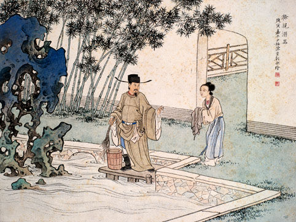

-

二十四孝故事
舜，传说中的远古帝王，五帝之一，姓姚，名重华，号有虞氏，史称虞舜。相传他的父亲瞽叟及继母、异母弟象，多次想害死他:让舜修补谷仓仓顶时，从谷仓下纵火，舜手持两个斗笠跳下逃脱;让舜掘井时，瞽叟与象却下土填井，舜掘地道逃脱。事后舜毫不嫉恨，仍对父亲恭顺，对弟弟慈爱。他的孝行感动了天帝。舜在历山耕种，大象替他耕地，鸟代他锄草。帝尧听说舜非常孝顺，有处理政事的才干，把两个女儿娥皇和女英嫁给他;经过多年观察和考验，选定舜做他的继承人。舜登天子位后，去看望父亲，仍然恭恭敬敬，并封象为诸侯。
-

倾尽天下
周帝白炎死在称帝十载后的一个雪夜。这个草莽出身的皇帝不喜奢华，逼宫夺位后便废弃了前朝敬帝所建的华美宫室，而每夜宿在帝宫内的九龙塔，死时亦盘膝在塔顶石室几案前的蒲团上，正对着壁上一幅画像。倘有历过前朝的宫女在，定会认出，那画上颜色无双的女子，正是前朝敬帝所封的最后一位贵妃。原来在倾国的十年之后，白炎终究追随那人而去。他身后并未留下只言片语。于是所有关于周朝开国皇帝的谜团，都与那悬于九重宝塔之上、隐在七重纱幕背后的画像，一并被掩埋进厚重的史书里。
-
凤囚凰
《凤囚凰》讲述了:此情应是长相守，你若无心我便休--这是爱的尊严。雪地青丝，一半铭记，一半遗忘。决然舍弃的那一刻，反而成就另一个开端。可以断去青丝，却断不去相思;可以握住双手，却握不住真心。红豆南国，愿君采撷，此物最相思。心本如镜，因爱生忧，因爱而生怖。刀锋、赌局，江山、楚玉谁轻谁重?七情沙场，爱恨情仇，孰是孰非，胜固欣然，败也从容。 生离死别，是束缚，还是解脱?时光缓缓流过，至少，我们依然活在这个时代--这个离丧与自由并存、放纵与傲气共生、靡乱而浪漫、华丽且张扬的时代。
-

华胥引
因一道天子令，九州天下硝烟四起。卫国城破之日，叶华胥引之绝爱之城蓁不甘投降陈国，从城楼跃下殉国，不料被天子所救。从此叶蓁改名君拂，游历江湖，用华胥引改写了许多人物的命运，看尽人间的爱恨情仇。君拂在游历江湖时遇到慕言公子，与他产生感情，也在这过程中渐渐恢复记忆和感知。而慕言的真实身份是陈国销声匿迹的世子苏誉，因不愿与同父异母的弟弟苏榭争夺王位而自我放逐。但是命运终究还是将苏誉与君拂推上了天下争夺之战，最终，为了拯救君拂，苏誉放弃了唾手可得的王位。两人的爱情成为千古绝唱。
-

枯叶之蝶
故事里，夜郎国的女将军白马讨伐洪荒四兽，从龙的肚子里救起一位青年，他已在龙的腹内活了三百年，忘记所有往事，他以自己肩上的蝴蝶刺青为名，就叫枯叶。被枯叶遗忘了的前尘往事究竟有什么样的生离死别？我们已无法知晓。白马带着枯叶重新上路，他们雪山遇险，枯叶发誓拼死也要把白马送回夜郎。结果，冰雪没能杀死他们，要杀他们的，是夜郎王。 说曾经，是因为白马恐怕早已对枯叶动了心……谁能不动心？那个没有过去的青年，宁愿用生命来成全白马对月夜的爱。白马喝光了腰间葫芦里从来不碰的酒，要和过去的爱人以性命相搏。她要枯叶为她找雪天莲蕊做的胭脂无水，赶他上路，要他远离这死地
-

西厢记
张生在普救寺里偶遇崔莺莺，两人渐生情愫，彼此爱慕。此时，反贼孙飞虎听闻莺莺美貌，欲强娶莺莺为妻。崔莺莺性格刚烈，宁死不从。危急之中，崔老夫人声言如有人能够退兵，就将莺莺许配给他。张生飞书求援，打退孙飞虎。崔老夫人却让二人以兄妹相称。幸有莺莺的丫环红娘从中帮忙，两人私定终身。后来，经历重重考验后，有情人终成眷属。